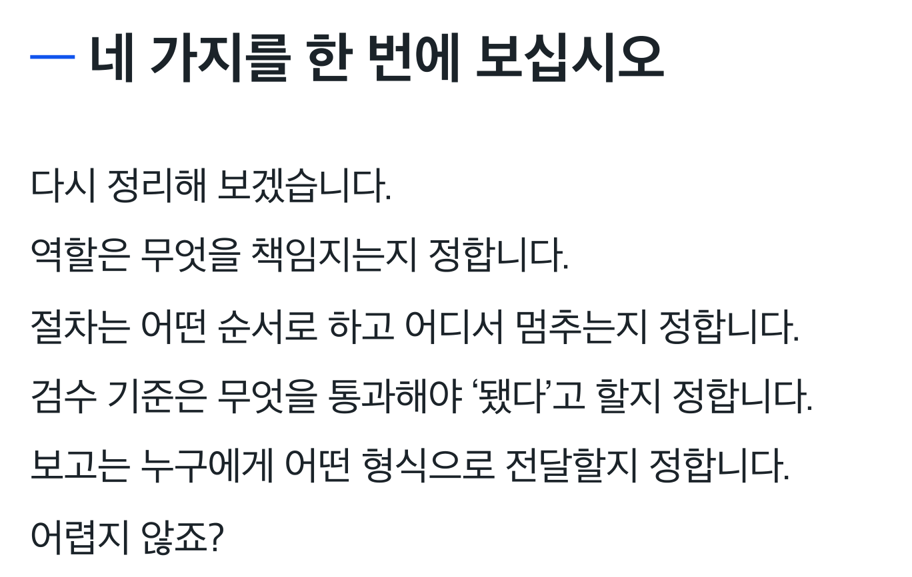
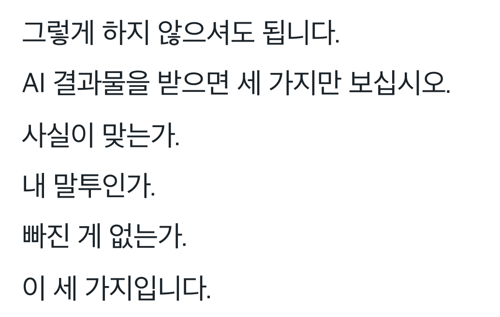

AI DELEGATION GUIDE
AI에게 맡겼는데
결국 내가 다시 하고 있다면
결국 내가 다시 하고 있다면
질문 다음엔
업무지시서
역할부터 검수와 기록까지.
AI에게 일을 맡기는 순서를 정리합니다.
시키면 제대로 하는 AI 만드는 법
만든 곳의 운영 기록
실제 사업을 운영해 온
경험이 있습니다
(주)메이크프렌즈 연도별 매출
2021–2023 · 월별 매출 원장 합산
출처: (주)메이크프렌즈 월별 매출 원장
연도별 합계를 소수 첫째 자리로 표시
연도별 합계를 소수 첫째 자리로 표시
대답은 받았는데, 일은 남아 있나요?
🤔원하는 결과의 기준을
먼저 알려 주세요
AI가 알아서 맞추길 기다리기보다
무슨 일을 어떤 순서로 끝낼지 적습니다.
01 · 맡기는 기준
업무지시서에는
네 칸이 필요합니다
🙋역할어떤 일을 맡는지
🪜절차어떤 순서로 할지
✅검수 기준무엇을 확인할지
📋보고어떻게 전달할지

문의 답변 좀 써 줘.
어디까지 하면
끝난 일인가?
끝난 일인가?
내 일에 적용하기
다음에도 꺼내 쓸
업무지시서 한 장
문의 답변 초안 지시서
- 역할
- 내가 확인할 고객 문의 답변 초안을 작성합니다.
- 절차
- 전달한 안내문을 읽고 문의와 관련된 내용을 찾습니다.
- 검수 기준
- 안내문에 없는 내용은 만들지 않습니다. 확인이 필요한 부분은 표시합니다.
- 보고
- 답변 초안과 확인할 항목을 나눠 전달합니다.
02 · 맡길 일 고르기
🔁내가 해 본 일,
세 번 반복한 일부터
익숙한 업무라야 결과를 보고
무엇이 맞고 틀렸는지 판단할 수 있어요.
작게 맡기고 확인하기
한 번에 모든 업무를 넘기기보다
반복되는 일 하나를 골라 지시서를 써 봅니다.
1
내가 하던 과정을 적고
2
AI에게 한 번 맡겨 보고
3
빠진 기준을 지시서에 더하기
03 · 결과 검수
답을 받으면
이 세 줄을 보세요
✓
사실이 맞는가근거와 맞지 않는 내용 확인
✓
내 말투인가내가 쓰는 표현과 맞는지 확인
✓
빠진 게 없는가요청한 결과가 모두 들어 있는지 확인

틀린 부분은 근거와 함께 다시 요청하세요.
직접 고치기 전에
어디가 왜 달라야 하는지 알려 줍니다.
04 · 다음 일을 위한 기록
좋았던 지시는
다시 꺼낼 수 있게
📥
Inbox
일단 모아 두는 곳
📒
Daily
오늘의 작업을 남기는 곳
🗂️
Knowledge
다음에 쓸 기준을 정리하는 곳
지시서, 검수 기준, 작업 기록이 쌓이면
다음 일을 설명할 재료가 됩니다.
AIMAX · 메이크패밀리
함께 공부하는 공간도
운영하고 있습니다
메이크패밀리 네이버 카페
12,127명

2026.09.10 카페정보 화면 기준
출처: 네이버 카페 westudyssat
출처: 네이버 카페 westudyssat
메이크패밀리 라운지
2,885명

2026.09.10 라운지 공개 화면에 표시된 인원
출처: 메이크패밀리 라운지 첫 화면
출처: 메이크패밀리 라운지 첫 화면
AI 결과를 고치느라
지친 분께
✓
업무를 혼자 맡는 대표·프리랜서
✓
매번 같은 지시를 다시 쓰는 분
✓
결과를 판단할 기준부터 필요한 분
AI에 맡길 실제 업무 하나를 준비해
책의 순서대로 적용해 보세요.
구매 전에 확인하세요
특정 AI를 설치하는 안내서인가요?
업무지시서, 검수, 기록으로 일을 맡기는 구조를 설명합니다. 특정 프로그램 이용권이나 자동화 시스템이 제공되는 상품은 아닙니다.
PDF 제목이 다른가요?
PDF 원문에는 「AI에게 시켰는데, 결국 내가 다시 했다」라는 제목이 표시됩니다. 라운지 표지의 안내 문구와 다를 수 있습니다.
따라 하면 시간이 얼마나 줄까요?
업무 종류와 사용 방식에 따라 달라집니다. 이 페이지에서는 시간 절약 수치나 업무 성과를 보장하지 않습니다.
지금 내 일에 적용해 보세요
다시 고치는 일을
줄이고 싶다면
20,000원
주문 이메일로 PDF를 받고
같은 이메일로 라운지에서 다시 꺼내보세요.
PDF 전자책입니다. 업무지시서와 폴더 화면은 책의 방법을 설명한 활용 예시입니다. 개별 업무 결과나 시간 절약을 보장하지 않습니다. AI 서비스 구독료는 포함되지 않습니다.